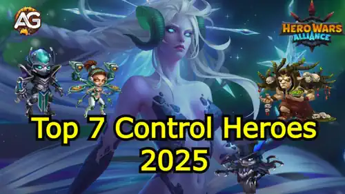

7 Melhores Heróis de Controle em Hero Wars Alliance (2025)
- Por: Alexandre Domingos. .
No campo de batalha mágico e caótico de Hero Wars Alliance, a classe de Controle ocupa um lugar especial. Esses heróis não apenas atacam eles manipulam, desativam e frustram seus inimigos. Sua presença pode desequilibrar o poder em qualquer partida.
Entre os 9 heróis de controle Andvari, Arachne, Faceless, Jorgen, Judge, Lian, Peppy, Phobos e Polaris - vamos revelar os 7 mais impactantes de 2025.
Este guia foca nos 7 melhores heróis de controle de 2025, com base em sua utilidade no campo de batalha, sinergia com as equipes do meta em 2025 e relevância atual no cenário em constante evolução da Arena.

Caíram do Topo
Peppy e Arachne são dois personagens que já brilharam intensamente, mas agora saíram dos holofotes. Apesar do seu potencial, ambos se tornaram fracos demais no meta atual. A energia caótica de Peppy e os atordoamentos de Arachne não são suficientes para competir com a formação dinâmica de hoje. Esperamos vê-los brilhar novamente algum dia, mas por enquanto, ficam de fora do top 7.
7º Lugar:

Jorgen é um sabotador silencioso. Ele não grita poder ele sussurra controle. Ele rouba energia dos inimigos e lança uma maldição que os impede de ganhar mais. Em um mundo onde habilidades supremas podem decidir batalhas em segundos, Jorgen é o guardião anti-ultimate. Embora esteja em 7º lugar devido à forte concorrência, seu conjunto de habilidades continua indispensável em muitas estratégias focadas em controle.
6º Lugar:

Lian é a combinação de elegância e poder em uma só heroína. Com um simples movimento do pulso, ela coloca os inimigos para dormir magicamente por 7 segundos, tornando-os inúteis. Já foi uma forte resposta contra Keira, mas se tornou uma escolha mais situacional devido ao declínio de Keira. Ainda assim, mesmo no meta atual, ela mantém sua força. Não precisa estar extremamente evoluída seu charme faz maravilhas mesmo com um investimento modesto. Talvez por isso seja subestimada: uma gigante adormecida entre gigantes.
5º Lugar:

Judge é um guardião do Progresso no sentido literal e figurado. Fora das equipes de Progresso, seu brilho enfraquece. Mas, ao construir uma equipe ao redor dele, ele recompensa sua lealdade com poderosos ataques em área (AOE) e escudos protetores. É o sonho de qualquer estrategista condicional, mas letal. Sua fraqueza está na curta duração de seus atordoamentos, mas sua sinergia com heróis como Isaac e Jet o torna uma ameaça que não deve ser subestimada.
4º Lugar:

Phobos é o terror em forma de mago. Ele se fixa no inimigo com maior poder mágico, atordoando-o por 6,6 segundos uma eternidade em uma batalha de Hero Wars. Em seguida, drena sua energia e reduz seu dano por 12 segundos. Sua presença assombrosa não é apenas psicológica ela muda o rumo da batalha. Enfrentar uma equipe inimiga centrada em magia sem Phobos é como ir à guerra sem armadura.
3º Lugar:

Faceless é o coringa. Sua habilidade de copiar habilidades supremas de aliados ou inimigos lhe dá uma versatilidade absurda. Precisa de um segundo escudo do Astaroth? Copie. Quer usar o poder do inimigo contra ele? Faça isso. Mas seu maior truque é levantar o inimigo da linha de frente e jogá-lo contra seus aliados. Tanques perdem o posicionamento, os frágeis entram em pânico, e Faceless sorri da retaguarda. Ele é o caos em forma uma arma estratégica nas mãos certas.
2º Lugar:

Andvari é um paradoxo: um guerreiro com o coração de um protetor. Ele protege os aliados contra deslocamentos uma resposta chave contra K’arkh e outras ameaças que movem forçadamente os heróis. Seu ultimate atinge os inimigos da linha de frente com um punho de pedra, atordoando-os por 3 segundos. Em seguida, aplica um escudo protetor ao aliado com a menor armadura, absorvendo dano físico e puro. Andvari é espada e escudo ao mesmo tempo um gênio defensivo que protege com ofensiva brutal.
1º Lugar:

Polaris é a rainha incontestável do controle. Todas as suas habilidades aplicam algum tipo de controle de grupo com destaque para os atordoamentos. Mas é sua passiva, Aurora Borealis, que a faz brilhar como nenhuma outra:
- Dano aumentado: +50
- Dano aumentado por Heróis do Progresso: +100
- Efeito Radiante: Se Polaris ou um aliado atordoar um inimigo que já está atordoado, esse inimigo recebe dano mágico aumentado por 8 segundos.
Em batalha, Polaris não apenas controla. Ela inspira. Sua simples presença amplifica o potencial da sua equipe especialmente dos heróis da facção Progresso. Ela vai além do meta é mítica.
Considerações Finais
A classe de Controle é o coração da jogabilidade estratégica em Hero Wars Alliance. Cada herói desta lista oferece algo único da negação de energia ao reposicionamento disruptivo, de escudos protetores ao domínio mágico. Seja para montar sua defesa na Arena ou preparar-se para a guerra de guildas, estes sete representam os pilares dos mais poderosos controladores de grupo de 2025.
Escolha com sabedoria, construa com criatividade e que seus inimigos nunca mais consigam usar suas habilidades supremas.
Sugestões de Vídeo:
Você pode ter interesse:
 Guia de Reformulação de Krista e Lars: Sinergia Explicada em Hero Wars Alliance
Guia de Reformulação de Krista e Lars: Sinergia Explicada em Hero Wars Alliance
") 7 Guerreiros Essenciais em Hero Wars Alliance para 2025 (Meta Revelado)
7 Guerreiros Essenciais em Hero Wars Alliance para 2025 (Meta Revelado)
 Top 7 Heróis de Cada Facção em Hero Wars Alliance 2025
Top 7 Heróis de Cada Facção em Hero Wars Alliance 2025
Deixe Sua Opinião!
Você gostou do nosso Guia de #################? Há algo que não entendeu ou gostaria de sugerir mudanças? Convidamos você a se juntar à nossa sessão de comentários na página do Alexandre Games Blog. Não hesite em expressar sua opinião, clarificar suas dúvidas e compartilhar sua sugestões.
Clique no botão abaixo para começar: